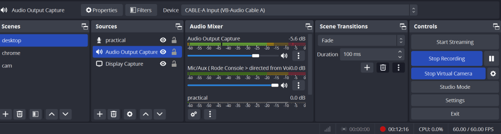

Routing to record the screenSetting Up Your Audio Workflow: Using VoiceMeeter, Virtual Audio Cables, and OBSRouting to record the screen
Setting Up Your Audio Workflow: Using VoiceMeeter, Virtual Audio Cables, and OBS
Creating a seamless audio workflow can be challenging, especially when integrating multiple applications like Teams, VoiceMeeter, and OBS. In this guide, we’ll walk you through setting up a configuration where you can route audio from Teams through VoiceMeeter to your speakers and capture it using OBS.
What You'll Need:
-
VoiceMeeter (Banana or Potato version recommended)
-
VB-Cable A (a virtual audio cable)
-
Rode Microphone
-
OBS Studio
Step 1: Install Necessary Software
Before starting, ensure you have installed:
-
VoiceMeeter from VB-Audio's website.
-
VB-Cable A, another product from VB-Audio.
-
OBS Studio, available on the official OBS website.
Step 2: Configure VoiceMeeter
-
Open VoiceMeeter:
-
Select your primary audio device (e.g., your speakers or headphones) in the Hardware Out section.
-
Set Up Virtual Inputs and Outputs:
-
In Hardware Input 1, select your Rode Microphone.
-
For Virtual Input, choose Cable A Output as your default input.
-
Routing Teams Audio:
-
Go to your Teams settings and set VB-Cable A as the audio device for both the microphone and speakers.
-
This routes all Teams audio through Cable A, which will be captured by VoiceMeeter.
-
Monitor and Adjust Audio:
-
Ensure that Cable A is routed to your speakers through VoiceMeeter. You should see audio levels moving in the VoiceMeeter interface.
-
Use the A1 button to send the audio to your primary output device (speakers or headphones).
Step 3: Configure OBS Studio
-
Add Audio Input Capture:
-
Open OBS Studio.
-
Add a new Audio Input Capture source.
-
Name it something descriptive like "Teams Audio".
-
Select Cable A Output as the device. This will capture the audio coming from Teams through VoiceMeeter.
-
Add Audio Output Capture:
-
Add another source, this time Audio Output Capture.
-
Select your main audio device (the same one used in VoiceMeeter’s Hardware Out).
-
Monitor Audio:
-
In OBS, you should see the audio meters moving for the "Teams Audio" source.
-
You can also add filters or adjust the volume levels as needed.
Step 4: Test Your Setup
-
Test with Teams:
-
Make a test call in Teams to ensure the audio is properly routed through VoiceMeeter and that you can hear it through your speakers.
-
Ensure the audio is being picked up by OBS.
-
Record and Playback:
-
Start recording in OBS.
-
Play back the recording to verify that both your microphone and the Teams audio are being captured clearly.
Troubleshooting Tips
-
No Audio in OBS:
-
Double-check that the correct devices are selected in OBS.
-
Ensure that VoiceMeeter is running and properly configured.
-
Echo or Feedback:
-
Make sure you don’t have multiple instances of the same audio source in OBS.
-
Use headphones to prevent microphone audio from feeding back into your speakers.
-
Audio Lag:
-
Adjust the buffering settings in VoiceMeeter and OBS if you notice any audio lag or desynchronization.
By following these steps, you can effectively route and record audio from Teams through VoiceMeeter to your speakers and capture it in OBS. This setup is particularly useful for streaming, recording tutorials, or ensuring high-quality audio in your presentations. Happy recording!
**Summary **
teams > speaker Cable A
voice meeter > Cable A to output speaker > Rode ( you hear )
obs reacord output capture > with cable A ( obs records it )

Imported from rifaterdemsahin.com · 2024